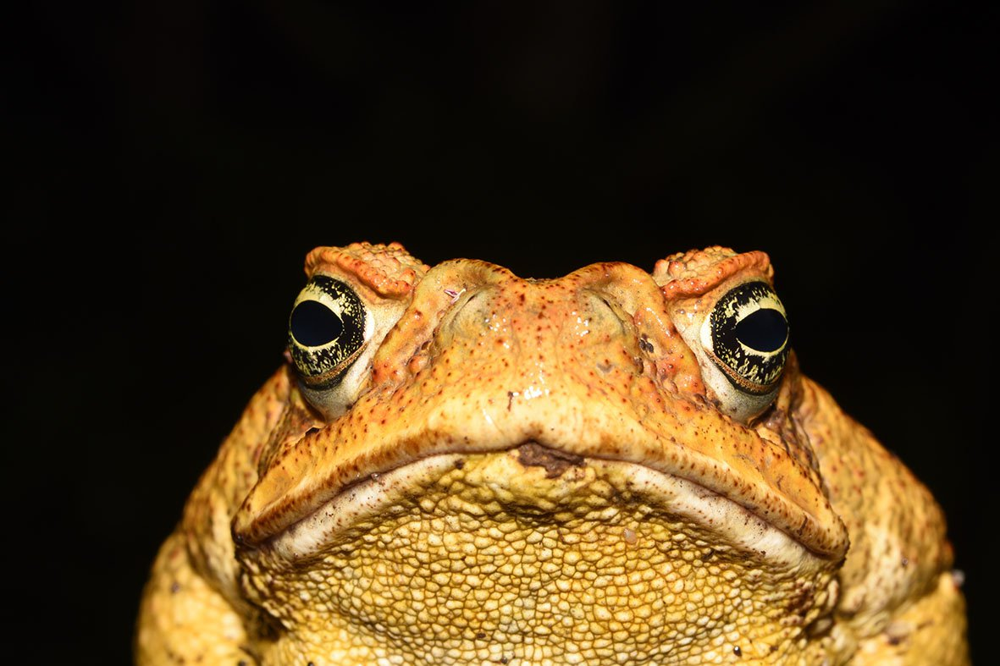

Toads are wonderful creatures who aren't talked about enough. Toads are an important key in ecosystems. There are many different toad species in Utah, an example is the Red-Spotted Toad.
Toads have many colors ranging from red to brown. Toads are semi aquatic, that means they can live on both land and in the water. Toads eat a variety of inseccts like ants and beetles.
| Breed | Pattern/Color | Native Area |
|---|---|---|
| American Toad | Light color with brown spots | Northern America |
| Red-Spotted Toad | Red Spotted | Southwestern United States |
| Spring Peeper | Tan, Grey, Dull Yellow, Dull Orange | Eastern North America |
| Woodhouse's Toad | Light brown or Grey | Central and Western United States |
| Green Toad | Green or Greenish Yellow | Southwestern United States |
Places you might see toads while leisurely running.
CSS Box Model reference to create webpages.